| Département | Images | Ville | Nom | Adresse | Période | Capacité | Histoire du lieu | Nombre d'exécutions |
| Alpes-de-Haute-Provence (04) | 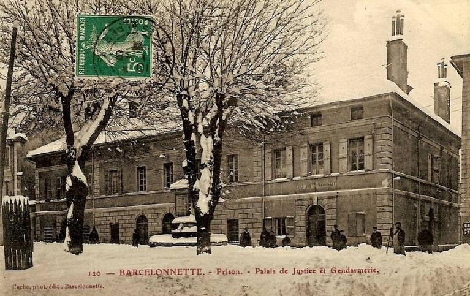 |
Barcelonnette | Maison d'arrêt | Rue Manuel | 1823-1926 | En plein centre ville, au bout de la Grande-Rue, formant un seul bâtiment avec le palais de justice et la gendarmerie - la prison occupe l'aile gauche -, elle est l'oeuvre de Charles-Stanislas L'Éveillé, sur les fondations de l'ancienne préfecture. Après sa fermeture, on se sert des pièces désaffectées pour l'hébergement des gendarmes à pied. Démolie pour faire des commerces, des restaurants et des immeubles d'habitation. | Aucune exécution | |
| Alpes-de-Haute-Provence (04) | 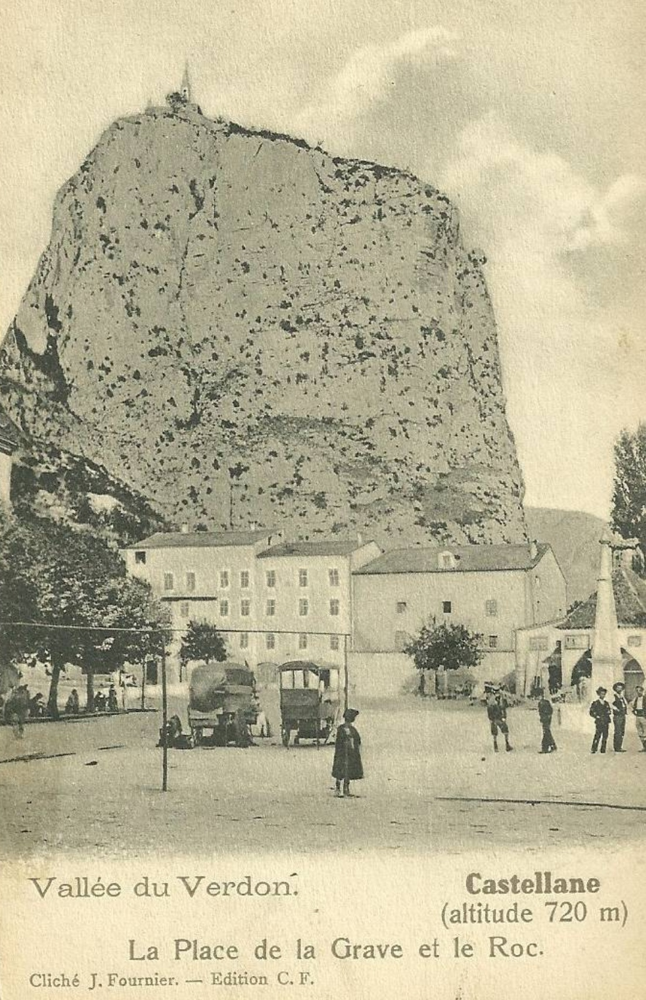 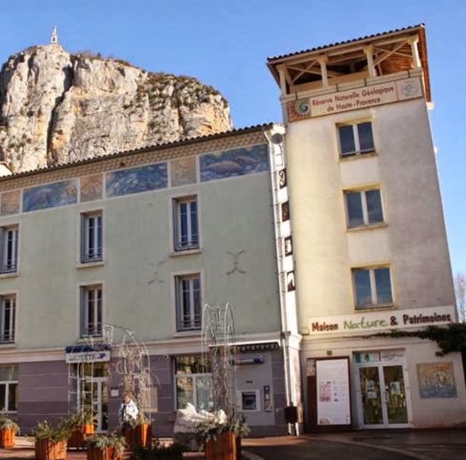 |
Castellane | Maison d'arrêt | Place Marcel Sauvaire | 1827-1926 | Jusque sous Charles X, palais de justice et prison partagent à Castellane les mêmes bâtiments. C'est en 1827 qu'une nouvelle maison d'arrêt est construite sur un terrain de 468 m² cédé à la ville un an plus tôt par un M. Collomp. Carrée, sur trois niveaux plus des combles, elle va remplir ses fonctions 99 ans durant, non sans écueils, puisqu'elle sera quasiment détruite à deux reprises : d'abord lors d'une série de séismes, le 12 décembre 1855, qui endommagent grandement les voûtes des salles, puis par un incendie, le 18 mai 1909. Après sa désaffection, pendant cinq ans, une compagnie de travaux publics s'installe dans l'ancienne prison, et c'est en novembre 1931 que les PTT en font leur bureau, toujours d'actualité en 2017. Evidemment, ce changement d'attribution passe par des travaux : démolition des murailles cernant le bâtiment, agrandissement des fenêtres de la façade. Les étages du bâtiment – où l’on peut encore voir l’une des anciennes portes renforcées de cellules - servent également de salle d'exposition, accessibles par une tour voisine comportant un escalier et un ascenseur. | Aucune exécution | |
| Alpes-de-Haute-Provence (04) | 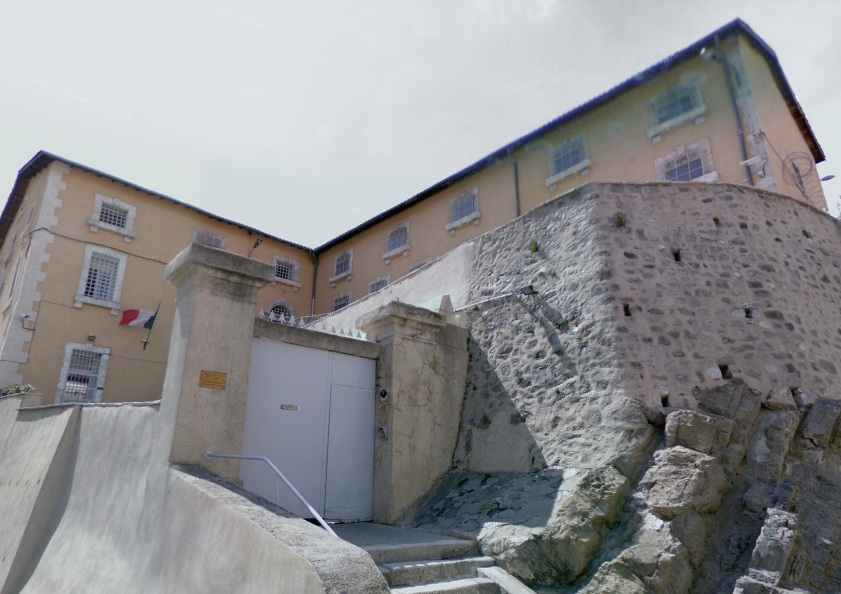 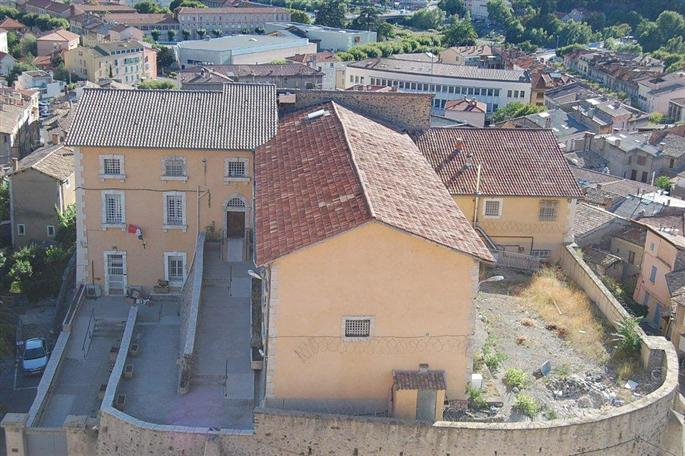 |
Digne-les-Bains | Prison Saint-Charles | Montée Saint-Charles | En service depuis 1790 | 45 places, 8 surveillants (1962) 38 places (2015) |
La vieille prison de Digne se dresse au sommet d'une colline et domine toute la ville. Très petite, elle jouxte l'église. C'est dans la rue qui sépare ces deux bâtiments que se dressa en 1919 et en 1930 l'échafaud, les deux fois pour exécuter des assassins qui n'avaient pas 20 ans. Après cela, les bourreaux ne revinrent plus à Digne, même si, en 1954, la prison hébergea quelques jours le plus vieux condamné à mort de France, Gaston Dominici, 75 ans. Extrait d'un site : "La prison de Digne-les-Bains est une petite structure : dix cellules et une trentaine de détenus. L'établissement est vétuste, un ancien château rénové il est vrai il y a deux ans. Mais avec trois détenus par cellule la promiscuité est pénible à supporter. Les prisonniers disposent de la télévision, d?une bibliothèque ; ils peuvent aussi s'inscrire à des cours scolaires et aussi travailler en atelier. Il existe un groupe théâtre. La messe est célébrée tous les samedis par l'aumônier, le père Stéphane Ligier. Une infirmière et un psychologue sont attachés à l'établissement." |
Deux exécutions : 1919 et 1930 |
| Alpes-de-Haute-Provence | 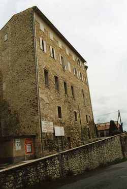 |
Forcalquier | Prison des Récollets | Boulevard Bouche | -1907 | Immeuble construit au XVe siècle dans la paroisse Saint-Pierre, couvent de Récollets en 1627. Devenu siège de la sous-préfecture après 1792, puis prison. On y emprisonna, enre autres, le sous-préfet Paillard en 1851, quand les habitants du département se révoltèrent contre le coup d'Etat de Napoléon III. Immeuble restauré en 1975. | Aucune exécution | |
| Alpes-de-Haute-Provence | 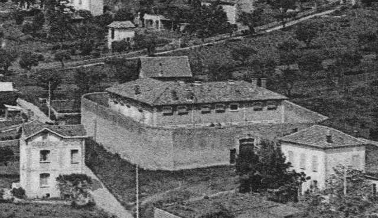 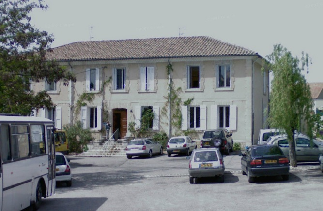 |
Forcalquier | Maison d'arrêt de la Simonette | 3, avenue de l'Observatoire | 1907-1926 | Construite pour remplacer la prison vétuste des Récollets, la nouvelle maison d'arrêt est vendue un an après son ouverture à la commune. Après sa désaffection, en 1938, la municipalité loue les lieux pour y fonder une entreprise. Pourtant, de novembre 1939 à juin 1940, la prison sert à nouveau de lieu d'incarcération durant la seconde guerre mondiale, annexe du camp des Milles. Rachetée par l'association Terrasson en 1949, elle accueille une école ménagère dans les années 1950. Quand l'école ferme, les bâtiments ne sont toujours pas abandonnés, et deviennent le foyer ADAPEI en 1977. En face, les locaux de la gendarmerie accueillent désormais la Maison des métiers du livre. | Aucune exécution | |
| Alpes-de-Haute-Provence (04) | 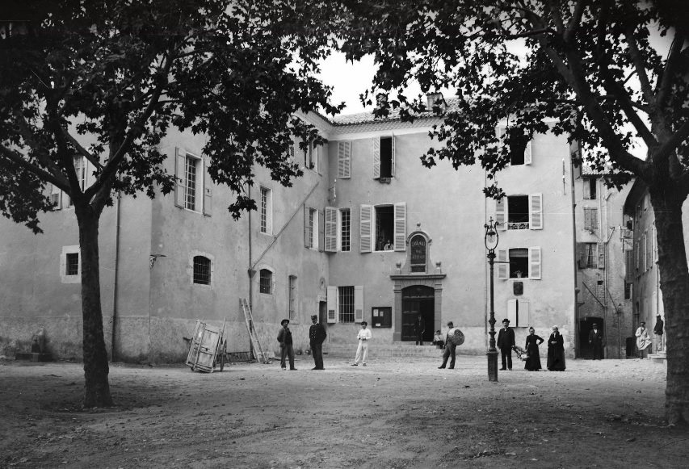 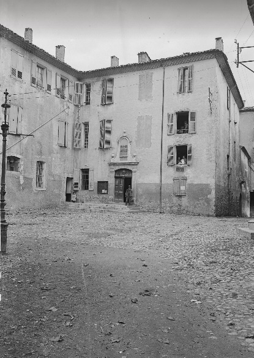 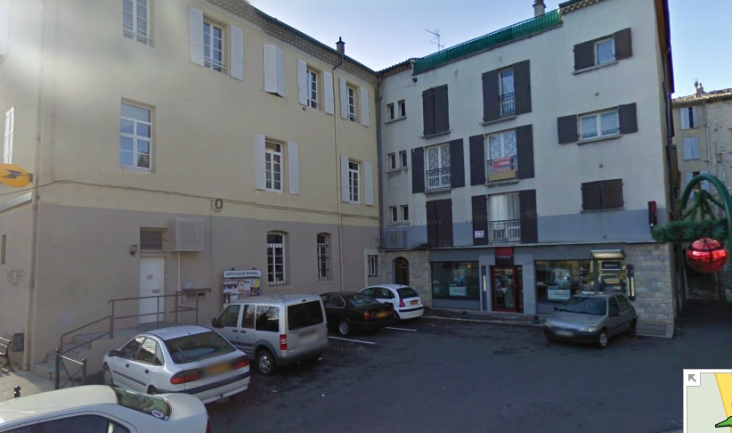 |
Sisteron | Prison de l'Eglise | Rue du Jalet | 1812-1926 | La minuscule prison de Sisteron, comme la plupart des prisons de sous-préfecture, ne survécut pas au décret-loi du 23 septembre 1926. Construite dans l'ancien hôpital où se trouvait déjà le tribunal d'instance et la gendarmerie, la prison accueillit en 1910 un condamné à mort qui fut guillotiné devant l'entrée. Les bâtiments existent toujours : on y trouve maintenant la Poste et une agence de la Société Générale. | Une seule exécution : 1910 |
{kind=link}
{kind=link}
{kind=link}
{kind=link}
{kind=link}
{kind=link}
{kind=link}
{kind=link}
{kind=link}
{kind=link}
{kind=link}